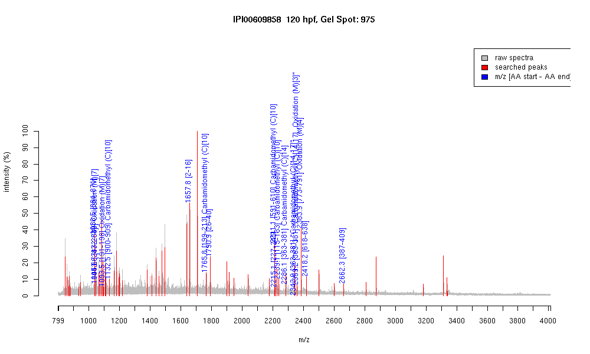

| Name | PREDICTED: similar to Zinc finger protein208 |
|---|---|
| MW | 105624.6 |
| PI | 9.29 |
| Mascot Protein Score | 67 |
| Masses (matched / unmatched) | 15 / 54 |

| Peptide | MZ (calc) | MZ (observed) | Error (DA) | Error (PPM) | Start | Stop | Modifications |
|---|---|---|---|---|---|---|---|
| KHMQVHTR | 1036.5469 | 1036.5424 | -0.0045 | -4 | 864 | 871 | |
| QNLTKHMR | 1043.5415 | 1043.5513 | 0.0098 | 9 | 832 | 839 | Oxidation (M)[7] |
| QYLTEHVR | 1045.5425 | 1045.5624 | 0.0199 | 19 | 247 | 254 | |
| QYLTEHMR | 1093.5095 | 1093.5427 | 0.0332 | 30 | 191 | 198 | Oxidation (M)[7] |
| NHSGEKTSIC | 1132.5051 | 1132.5485 | 0.0434 | 38 | 900 | 909 | Carbamidomethyl (C)[10] |
| LEYLAVHSTVATPEK | 1657.8795 | 1657.8008 | -0.0787 | -47 | 2 | 16 | |
| IHTGEQLYTCQQCGK | 1765.7996 | 1765.7701 | -0.0295 | -17 | 199 | 213 | Carbamidomethyl (C)[10] |
| LLALKEESQDQMEEK | 1790.884 | 1790.9043 | 0.0203 | 11 | 26 | 40 | |
| IHSGVKPHACHQCGKSFSCK | 2211.0369 | 2211.1072 | 0.0703 | 32 | 591 | 610 | Carbamidomethyl (C)[10] |
| IHTGEKPYTCQHCGHSFNR | 2214.9919 | 2215.092 | 0.1001 | 45 | 227 | 245 | |
| IHTGEKPYTCQQCGNSFIR | 2239.0383 | 2239.1387 | 0.1004 | 45 | 115 | 133 | Carbamidomethyl (C)[10] |
| EHMRIHTGEKPHTCHQCGK | 2286.0437 | 2286.1433 | 0.0996 | 44 | 363 | 381 | Carbamidomethyl (C)[14] |
| EHMRIHTGEKPHTCHQCGK | 2343.0652 | 2342.9758 | -0.0894 | -38 | 363 | 381 | "Carbamidomethyl (C)[14,17]" |
| EHMRIHTGEKPHTCHQCGK | 2359.0601 | 2359.1536 | 0.0935 | 40 | 363 | 381 | "Carbamidomethyl (C)[14,17], Oxidation (M)[3]" |
| EELMQLKEESEDQNEMEEK | 2384.0115 | 2383.9448 | -0.0667 | -28 | 773 | 791 | Oxidation (M)[4] |
| RTHTGEKPYSCHQCGHNFTSK | 2418.0825 | 2418.1958 | 0.1133 | 47 | 618 | 638 | |
| QNLTDHMRIHTGEKPHTCQQCGK | 2662.2395 | 2662.2747 | 0.0352 | 13 | 387 | 409 |